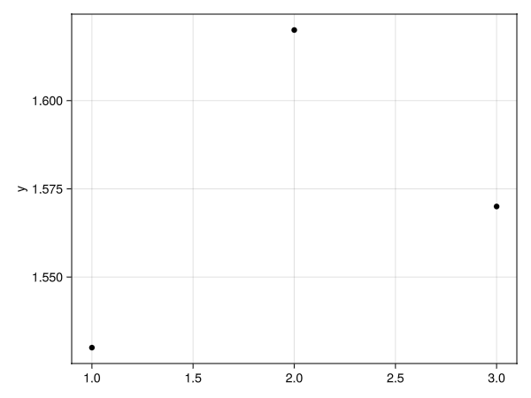
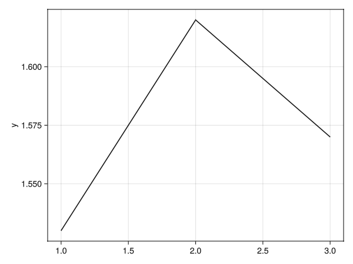
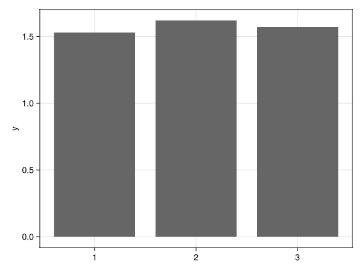
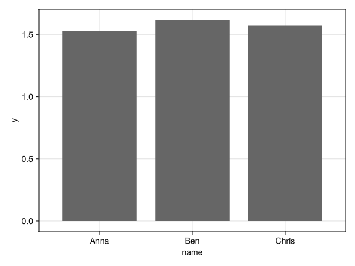
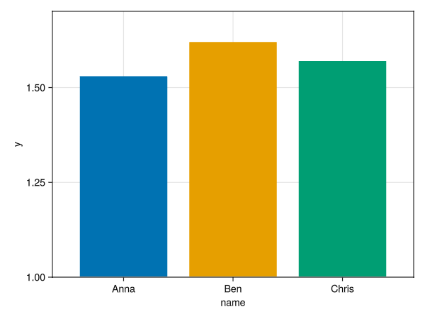
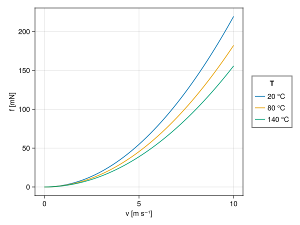
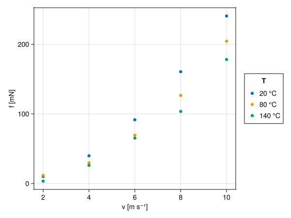
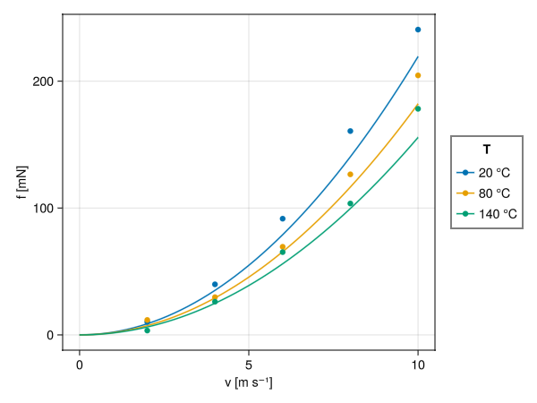
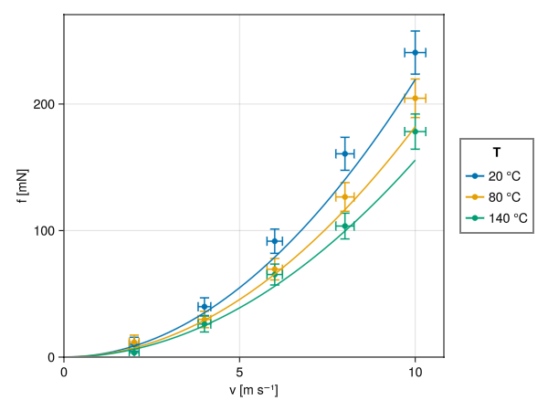

Introduction to AlgebraOfGraphics (AoG)
CasualPlots.jl uses AoG under the hood, and the standalone scripts it generates also use AoG. To customize a generated script, you need a working grasp of AoG basics.
AoG builds plots by combining layers (data * mapping * visual). While the underlying logic is straightforward once understood, the official documentation is geared toward statistical and observational data analysis, which can make the initial learning curve steep for experimental scientists and engineers who mainly need standard 2D Scatter, Lines, and BarPlot figures. This chapter introduces AoG from that perspective, starting from a single vector and building up to multi-layer plots with physical units and error bars.
Other Manuals and Tutorials
For further reading and comprehensive reference, see:
- Official AlgebraOfGraphics.jl Documentation
- Exploratory Data Analysis with Makie (Using Julia)
- Pumas Tutorials: Introduction to AlgebraOfGraphics
- Pumas Tutorials: The Grammar of AlgebraOfGraphics
Simple Plots from a Vector
Let's start with the simplest dataset — a one-dimensional array of data — and see how we can visualize it in different ways.
Scatter Plot
The common way to visualize individual data points is a Scatter Plot.
using WGLMakie, AlgebraOfGraphics, DataFrames
d01 = (; y=[1.53, 1.62, 1.57])
fg1s = data(d01) * mapping(:y) * visual(Scatter) |> drawThis code creates a scatter plot of the y values. The data function specifies the data source, mapping determines how data components are mapped to visual properties of the plot (in this case, the y axis), and visual specifies the type of plot.

Lines Plot
To see the trend between the data points, we can use a line plot.
fg1l = data(d01) * mapping(:y) * visual(Lines) |> draw
Bar Plot
A bar plot is useful for comparing values.
fg1b = data(d01) * mapping(:y) * visual(BarPlot) |> draw
Mapping Categorical Data
Now, let's add some categorical data to our plots.
Bar Plot with Categories
We can map a categorical variable to the x-axis to create a bar plot with named bars.
d02 = (; y=[1.53, 1.62, 1.57], name=["Anna", "Ben", "Chris"])
fg2b = data(d02) * mapping(:name, :y) * visual(BarPlot) |> draw
Colored Bar Plot
We can also use the categorical variable to color the bars.
plt2 = data(d02) * mapping(:name, :y; color=:name) * visual(BarPlot)
fg2bc = draw(plt2; legend=(show=false, ), axis=(limits=(nothing, nothing, 1.0, nothing),));Here, we also adjusted the axis limits and hid the legend for a cleaner look.

Working with Real Data: Air Drag Example
This section demonstrates more advanced AlgebraOfGraphics features using a realistic example: comparing theoretical air drag force calculations with experimental measurements. It also showcases how AlgebraOfGraphics seamlessly handles physical units using Unitful.jl, automatically labeling axes with the correct units. The air drag force on a sphere depends on velocity and temperature, which are our experimental variables. We'll progressively build up a complex multi-layer plot to show both theoretical predictions and measured data with error bars.
Theoretical Data: Line Plots with Grouping
First, we calculate theoretical force values across a range of velocities at three different temperatures (20°C, 80°C, 140°C):
Create data
using WGLMakie, AlgebraOfGraphics, DataFrames, Unitful
f_theor(v; T=25u"°C", d=10u"cm^2", Cp=0.47) = (13.6816e5u"(kg*K)/m^5" * Cp * v^2 * d^2 / (T |> u"K")) |> u"mN"
T = 20:60:140
Tc = collect(T) .* u"°C"
v = (0:0.2:10) .* u"m/s"
df = DataFrame(
v = [v for v in v for _ in Tc],
T = [t for _ in v for t in Tc],
f = [f_theor(v, T=t) for v in v for t in Tc]
)The resulting DataFrame has one row for each velocity-temperature combination:
153×3 DataFrame
Row │ v T f
│ Quantity… Quantity… Quantity…
─────┼─────────────────────────────────────
1 │ 0.0 m s⁻¹ 20 °C 0.0 mN
2 │ 0.0 m s⁻¹ 80 °C 0.0 mN
3 │ 0.0 m s⁻¹ 140 °C 0.0 mN
4 │ 0.2 m s⁻¹ 20 °C 0.08 mN
⋮ │ ⋮ ⋮ ⋮
152 │ 10.0 m s⁻¹ 80 °C 182.09 mN
153 │ 10.0 m s⁻¹ 140 °C 155.64 mNNow we create a line plot with separate curves for each temperature using the group keyword:
plt1 = data(df) * mapping(:v, :f; group=:T, color=:T => nonnumeric) * visual(Lines)
fig1 = plt1 |> drawThe color=:T => nonnumeric transformation tells AlgebraOfGraphics to treat temperature as a categorical variable for marker (in this case, line) colors.

Measured Data: Transforming from Wide to Long Format
Experimental measurements are often stored in a "wide" format. Here, data for each temperature are in a separate column.
Create data
# Measured data at discrete velocities
vs = (2:2:10) .* u"m/s"
f_measured = [
10.17 11.78 3.43;
39.86 29.74 26.15;
91.6 69.46 65.26;
160.67 126.57 103.57;
240.65 204.54 178.22
] .* u"mN"
m = hcat(vs, f_measured)
Ts = (T .|> string)
nms = vcat("v", Ts) # column names
dfm = DataFrame(m, nms)The wide-format DataFrame looks like this:
5×4 DataFrame
Row │ v 20 80 140
│ Quantity… Quantity… Quantity… Quantity…
─────┼─────────────────────────────────────────────
1 │ 2.0 m s⁻¹ 10.17 mN 11.78 mN 3.43 mN
2 │ 4.0 m s⁻¹ 39.86 mN 29.74 mN 26.15 mN
3 │ 6.0 m s⁻¹ 91.6 mN 69.46 mN 65.26 mN
4 │ 8.0 m s⁻¹ 160.67 mN 126.57 mN 103.57 mN
5 │ 10.0 m s⁻¹ 240.65 mN 204.54 mN 178.22 mNAlgebraOfGraphics works best with "long" format data, so let's convert the data to long format using stack:
Convert table, add error values
dfl = stack(dfm, Ts; value_name=:f, variable_name=:T)
# convert T into numeric unitful data
transform!(dfl, :T => ByRow(s -> parse(Int, s)*u"°C") => :T)
# Add error estimates
dfl[!, :f_err] = @. 5u"mN" + dfl[!, :f] * 0.05
dfl[!, :v_err] = @. 0.1u"m/s" + dfl[!, :v] * 0.02What just happened?
stack(dfm, Ts; value_name=:f, variable_name=:T)takes the three temperature columns ("20","80","140") and "stacks" them into two new columns:T(containing the column name) andf(containing the data)transform!converts temperature from strings back to integers and then to°C- We then add error estimates for both force and velocity measurements
The transformed long-format DataFrame with error columns:
Row │ v T f f_err v_err
│ Quantity… Quantity… Quantity… Quantity… Quantity…
─────┼─────────────────────────────────────────────────────────
1 │ 2.0 m s⁻¹ 20 °C 10.17 mN 5.51 mN 0.14 m s⁻¹
2 │ 4.0 m s⁻¹ 20 °C 39.86 mN 6.99 mN 0.18 m s⁻¹
3 │ 6.0 m s⁻¹ 20 °C 91.6 mN 9.58 mN 0.22 m s⁻¹
4 │ 8.0 m s⁻¹ 20 °C 160.67 mN 13.03 mN 0.26 m s⁻¹
⋮ │ ⋮ ⋮ ⋮ ⋮ ⋮
14 │ 8.0 m s⁻¹ 140 °C 103.57 mN 10.18 mN 0.26 m s⁻¹
15 │ 10.0 m s⁻¹ 140 °C 178.22 mN 13.91 mN 0.3 m s⁻¹Now we can create a scatter plot.
plt2 = data(dfl) * mapping(:v, :f; color=:T => nonnumeric) * visual(Scatter)
fig2 = plt2 |> draw
Layering: Combining Multiple Plot Types
One of AlgebraOfGraphics' most powerful features is the ability to layer different plot types. We can combine our theoretical lines with the measured scatter points using the + operator:
fg12 = (plt1 + plt2) |> drawThis creates a single plot showing both datasets, making it easy to compare theory with experiment.

Advanced Layering: Error Bars and Custom Scales
Finally, we add error bars in both x and y directions. To avoid cluttering the legend, we use a named scale :err for the error bars so we can hide them:
# Y-direction error bars
plt3 = data(dfl) *
mapping(:v, :f, :f_err; color = :T => nonnumeric => scale(:err)) *
visual(Errorbars; whiskerwidth = 10)
# X-direction error bars
plt4 = data(dfl) *
mapping(:v, :f, :v_err; color=:T => nonnumeric => scale(:err)) *
visual(Errorbars; whiskerwidth = 10, direction = :x)
# Combine all layers with custom axis settings
fg1234 = draw(plt4 + plt3 + plt2 + plt1,
scales(; err = (; legend = false));
axis = (; limits = (0, nothing, 0, nothing))
)Key features demonstrated here:
- Named scales:
scale(:err)creates a custom scale identifier. Here, because it is passed to thecolormapping, AoG assigns it to an independent color scale that can be configured separately. - Scale configuration:
scales(; err = (; legend = false))hides the legend for the:errscale - Axis customization:
limits = (0, nothing, 0, nothing)sets both axes to start at 0 while letting the maximum values be determined automatically - Layer ordering: Layers are drawn in the order they appear (plt4 → plt3 → plt2 → plt1), so error bars appear behind the data points

This final plot combines four layers: theoretical lines, measured points, and error bars in both directions, creating a presentation-ready figure.